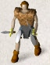

2. What is going on here?
ou have just begun
a game of NetHack. Your goal is to grab as much
treasure as you can, retrieve the Amulet of Yendor, and escape the Mazes
of Menace alive.
Your abilities and strengths for dealing with the hazards of adventure
will vary with your background and training:
 Archeologists understand dungeons pretty well; this enables them to
move quickly and sneak up on the local nasties. They
start equipped with the tools for a proper scientific expedition.
Archeologists understand dungeons pretty well; this enables them to
move quickly and sneak up on the local nasties. They
start equipped with the tools for a proper scientific expedition. |
 Barbarians are warriors out of the hinterland, hardened to battle.
They begin their quests with naught but uncommon strength, a trusty hauberk, and
a great two-handed sword.
Barbarians are warriors out of the hinterland, hardened to battle.
They begin their quests with naught but uncommon strength, a trusty hauberk, and
a great two-handed sword. |
|
Cavemen and Cavewomen start with exceptional strength but, unfortunately,
with neolithic weapons. |
Healers are wise in medicine and apothecary. They know the herbs
and simples that can restore vitality, ease pain, anesthetize, and neutralize
poisons; and with their instruments, they can divine
a being's state of health or sickness. Their medical practice earns
them quite reasonable amounts of money, with which they enter the dungeon. |
|
Knights are distinguished from the common skirmisher
by their devotion to the ideals of chivalry and by the
surpassing excellence of their armor. |
 Monks
are ascetics, who by rigorous practice of physical and mental disciplines
have become capable of fighting as effectively without weapons as with.
They wear no armor but make up for it with increased mobility. Monks
are ascetics, who by rigorous practice of physical and mental disciplines
have become capable of fighting as effectively without weapons as with.
They wear no armor but make up for it with increased mobility. |
| Priests
and Priestesses are clerics militant, crusaders advancing
the cause of righteousness with arms, armor, and arts
thaumaturgic. Their ability to commune with deities via
prayer occasionally extricates them from peril, but can also put them in
it. |
Rangers
are most at home in the woods, and some say slightly out of place in a
dungeon. They are, however, experts in archery as well as tracking
and stealthy movement. |
| Rogues
are agile and stealthy thieves, with knowledge
of locks, traps, and poisons. Their
advantage lies in surprise, which they employ to great advantage. |
Samurai
are the elite warriors of feudal Nippon. They are lightly
armored and quick, and wear the dai-sho, two swords of
the deadliest keenness. |
| Tourists
start out with lots of gold (suitable for shopping with), a
credit card, lots of food, some maps, and an expensive camera. Most
monsters don't like being photographed. |
 Valkyries
are hardy warrior women. Their upbringing in the harsh
Northlands makes them strong, inures them to extremes of cold,
and instills in them stealth and cunning. Valkyries
are hardy warrior women. Their upbringing in the harsh
Northlands makes them strong, inures them to extremes of cold,
and instills in them stealth and cunning. |
| Wizards
start out with a knowledge of magic, a selection of magical
items, and a particular affinity for
dweomercraft. Although seemingly weak and easy to overcome at first
sight, an experienced Wizard is a deadly foe. |
|
You may also choose the race of your character:
Dwarves are smaller than humans or elves, but are stocky and
solid individuals. Dwarves' most notable trait
is their great expertise in mining and metalwork. Dwarvish armor
is said to be second in quality not even to the mithril armor of
the Elves.
Elves are agile, quick, and perceptive; very little of
what goes on will escape an Elf. The quality of Elven
craftsmanship often gives them an advantage in arms and armor.
Gnomes are smaller than but generally similar to
dwarves. Gnomes are known to be expert miners,
and it is known that a secret underground mine complex built by this race
exists within the Mazes of Menace, filled with both riches and danger.
Humans are by far the most common race of the surface world,
and are thus the norm by which other races are often
compared. Although they have no special abilities, they can succeed in
any role.
Orcs are a cruel and barbaric race that hate every
living thing (including other orcs). Above all others, Orcs
hate Elves with a passion unequalled, and will go out of their way
to kill one at any opportunity. The armor and weapons
fashioned by the Orcs are typically of inferior quality.
Previous: Introduction, Next: What
do all those things on the screen mean?